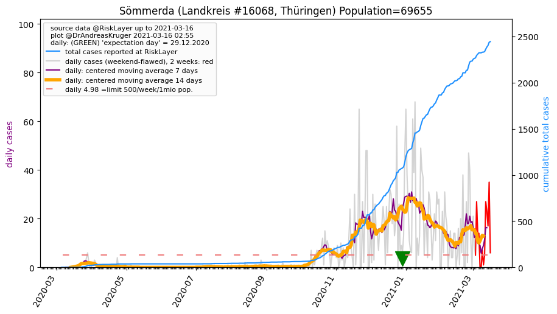
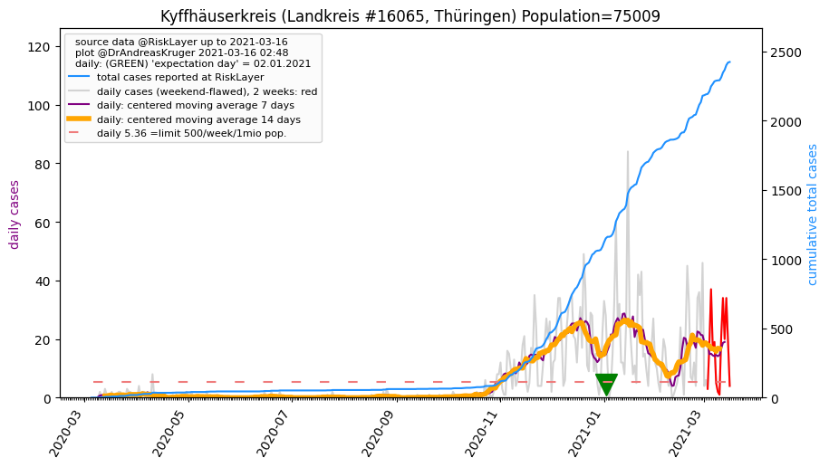
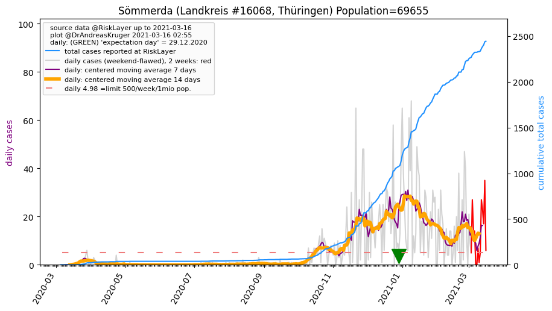
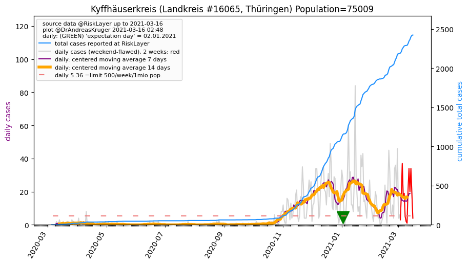

")
")
")
")

")
")
")
")
")

| Weimar_KS (0.0 km) |
Weimarer Land_LK (4.0 km) |
Jena_KS (19.8 km) |
| Erfurt_KS (20.9 km) |
Sömmerda_LK (23.0 km)  |
Saale-Holzland-Kreis_LK (30.2 km) |
| Ilm-Kreis_LK (36.4 km) |
Saalfeld-Rudolstadt_LK (37.9 km) |
Burgenlandkreis_LK (43.9 km) |
| Gotha_LK (44.5 km) |
Kyffhäuserkreis_LK (45.0 km)  |
All plots are regenerated with new data every night. Beware this temporary hotspot is an experimental page - it might get removed, so please do not link to it. Instead link to project http://tiny.cc/cov19de.